PhD Researcher — Microbiome Management
Ghent University · Baekeland Fellow
Development of novel microbial health indicators for barramundi aquaculture.
VLAIO Baekeland mandate: Nov 2023–Nov 2027
Academic growth and professional experience, shown side by side.
Ghent University · Baekeland Fellow
Development of novel microbial health indicators for barramundi aquaculture.
Ghent University
Aquaculture Health Management by combining essential oils and probiotics.
Can Tho University
Research: Effects of CO₂ and high temperature on oxygen consumption and growth performance of striped catfish.
KYTOS Belgium
KYTOS Belgium · KYTOS Vietnam
KYTOS Vietnam
WorldFish
Prepared a comprehensive technical report for carp polyculture systems.
Select a location to see the academic, professional, research-stay, training, and conference activities connected to that country.
